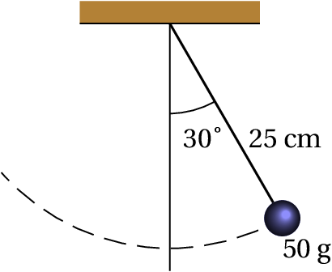

Aos 23 anos Isaac Newton teve uma ideia inovadora que foi a inspiração para a sua teoria da gravitação e da mecânica em geral. Newton pensou que assim como uma maçã cai, devido à atração gravitacional da Terra, a Lua também se encontra em queda livre sob a ação gravitacional da Terra. A razão pela qual a queda livre da Lua não faz diminuir a sua distância à Terra, como no caso da queda da maçã, é porque a Lua tem uma velocidade horizontal muito elevada, de forma que em cada instante a distância horizontal percorrida e a distância vertical da queda descrevem um arco de círculo com raio constante. Com os dados conhecidos na época para a distância entre a Terra e a Lua e o período orbital da Lua, Newton calculou a distância vertical que a Lua cai por unidade de tempo; comparando com a distância da queda de uma maçã, descobriu que a força de atração gravitacional decresce inversamente proporcional à distância ao quadrado.
As três leis de Newton são a base da mecânica clássica, que permite estudar desde o movimento dos objetos à nossa volta, até o movimento dos planetas, estrelas e outros objetos distantes. As 3 leis foram enunciadas de forma clara numa única página do livro escrito por Newton em 1687 (Princípios Matemáticos da Filosofia Natural).
A primeira lei de Newton, denominada lei da inércia, foi enunciada por Newton no seu livro assim:
"Todo corpo mantém o seu estado de
repouso ou de movimento
uniforme segundo uma linha reta, se não for compelido a mudar o seu
estado por forças nele impressas.
Os projéteis continuam no seu movimento, a menos que sejam retardados pela resistência do ar ou impelidos para baixo pela força da gravidade. Um pião, cujas partes, pela sua coesão, são continuamente desviadas dos seus movimentos retilíneos, não cessa de rodar se não for retardado pelo ar. Os corpos maiores — planetas e cometas — encontrando menos resistência nos espaços livres, continuam os seus movimentos, retilíneos ou circulares, por tempo muito maior."
Um sistema de referência em que se verifique a lei da inércia, é designado por referencial inercial. Considere-se o seguinte exemplo: uma esfera em repouso sobre uma mesa horizontal, numa carruagem de um comboio que passa por uma estação com movimento retilíneo uniforme.
Uma pessoa sentada na estação vê a esfera passar junto com o comboio, com movimento retilíneo uniforme. No entanto, um passageiro sentado na carruagem do comboio observará que a esfera está em repouso na mesa. A estação e a carruagem do comboio são ambos referenciais inerciais e as duas pessoas observam que o comportamento da esfera está de acordo com a lei de inércia; uma das pessoas observa que a esfera mantém o seu estado de repouso e a outra observa que mantém o seu movimento retilíneo uniforme, porque não existem forças que a obriguem a alterar o seu estado de repouso ou movimento uniforme.
Se o comboio começa a travar, o passageiro na estação verá que a esfera mantém o seu movimento uniforme, mas como a velocidade do comboio está a diminuir, a mesa fica atrasada em relação à esfera e a esfera rola para frente da mesa. A estação continua sendo um referencial inercial. No entanto, a carruagem já não é um referencial inercial e, assim, do ponto de vista da pessoa na carruagem, a esfera já não obedece a lei da inércia: abandona o seu estado de repouso e começa a acelerar, sem que exista nenhuma força responsável por essa alteração.
O movimento de rotação da Terra faz com que não seja um referencial inercial; no entanto, o peso dos objetos na superfície da Terra e a força de reação normal que se opõe ao peso anulam o efeito da rotação e, como tal, em relação a movimentos horizontais na superfície da Terra, é uma boa aproximação admitir que a Terra é um referencial inercial. Qualquer objeto em repouso ou com movimento retilíneo uniforme na superfície da Terra também é referencial inercial. A estação ou um comboio estacionado estão em repouso em relação à Terra e, por isso, são referenciais inerciais. Um comboio com movimento retilíneo uniforme em relação à Terra é referencial inercial, mas um comboio a acelerar ou a travar ou com movimento curvilíneo em relação à Terra não é referencial inercial.
A segunda lei de Newton pode ser considerada a definição do vetor associado a uma força, medido em função do efeito que produz sobre os corpos em que atua. O texto original do livro de Newton é:
"A mudança na quantidade de movimento é proporcional à
força motora impressa e faz-se na direção da linha reta
segundo a qual a força motora é aplicada.
Se uma força gera uma quantidade de movimento, uma força dupla gerará uma quantidade de movimento dupla, uma força tripla gerará uma quantidade de movimento tripla, quer a força seja impressa de uma vez e imediatamente, quer seja impressa gradual e sucessivamente. E se o corpo já então se movia, a nova quantidade de movimento (sempre dirigida na direção da força atuante) é adicionada ou subtraída à quantidade de movimento inicial, conforme sejam concordantes ou opostas uma da outra; ou juntas obliquamente de forma a produzir uma nova quantidade de movimento composta pela determinação das duas."
Uma das oito definições que antecedem o enunciado das três leis no livro de Newton é a definição de quantidade de movimento, que é o produto da massa e a velocidade de um corpo. A quantidade de movimento também costuma chamar-se momento linear. A explicação a seguir à segunda lei, sobre como somar a quantidade de movimento devida a uma força, com a quantidade de movimento que o objeto já tinha, corresponde à nossa definição atual de adição de vetores. Como tal, na notação usada atualmente a quantidade de movimento definida por Newton é um vetor , igual ao produto da massa do objeto vezes a sua velocidade
A "mudança da quantidade de movimento", referida na segunda lei, é a quantidade de movimento final, , menos a quantidade de movimento inicial, e, como é dito no enunciado da lei, essa mudança de quantidade de movimento é um vetor com a mesma direção e sentido da força que a produz. A frase "quer a força seja impressa de uma vez e imediatamente, quer seja impressa gradual e sucessivamente" significa que a mudança na quantidade de movimento é igual ao integral da força durante o intervalo de tempo em que atua. Assim sendo, a expressão matemática da segunda lei de Newton é:
onde é a força em função do tempo. No enunciado da lei, Newton considera unicamente o caso de uma única força, mas mais para a frente no seu livro explica que se houver várias forças, deverão ser adicionadas vetorialmente e explica a regra do paralelogramo, para somar vetores (ver figura 2.4 no capítulo 2).
Assim sendo, a força na equação 4.2 deverá ser interpretada como a força resultante que atua sobre o objeto, ou seja, a soma vetorial de todas as forças aplicadas sobre o objeto
O integral da força resultante, no lado esquerdo da equação 4.2, dá como resultado um vetor chamado impulso. Assim sendo, se uma força atua durante um intervalo de tempo [ , ] sobre um corpo com quantidade de movimento inicial , a sua quantidade de movimento no instante será .
A equação 4.2 pode ser escrita de forma diferencial, ou seja,
E quando a massa do corpo permanece constante, substituindo por conduz à seguinte equação
onde é a aceleração do corpo, igual à derivada da sua velocidade em ordem ao tempo. Esta é a forma mais habitual de escrever a segunda lei de Newton.
A unidade de força no Sistema Internacional (SI) de unidades é o newton, N. Uma força de 1 N é a força que produz aceleração de 1 m/s2 num corpo com massa de 1 kg.
Conforme já foi referido em capítulos anteriores, no vácuo todos os objetos em queda livre são acelerados com a aceleração da gravidade, que na superfície terrestre tem um valor .
Assim sendo, de acordo com a segunda lei de Newton o peso de qualquer objeto (força da gravítica exercida pela Terra) é diretamente proporcional à sua massa:
em que é um vetor constante na direção vertical, com sentido de cima para baixo e módulo igual à aceleração da gravidade, , que é aproximadamente igual a 9.8 m/s2.
Por exemplo, um corpo com massa de 2 kg na superfície terrestre terá um peso de 19.6 N. Se o mesmo corpo estiver num satélite, a sua massa seria a mesma mas o seu peso seria muito menor, devido a que a aceleração da gravidade é muito menor à altura à que se encontra o satélite. Na distância à que se encontra a Lua, a aceleração da gravidade é apenas 0.00269 m/s2; o peso da Lua é esse valor vezes a sua massa.
O peso de um corpo é realmente a sobreposição de muitas forças: o peso de cada uma das partículas que compõem o corpo, que somadas produzem o peso total . Para além do módulo, direção e sentido, o ponto onde é aplicada uma força também é importante. Newton aborda essa questão no seu livro, mas esse assunto será adiado até o capítulo 5. Por enquanto, bastará ter em conta que o peso de um corpo deve ser representado sempre num ponto designado por centro de gravidade, que nos corpos homogéneos e com formas geométricas simples encontra-se no centro geométrico.
Igual que a primeira lei, a segunda lei é válida apenas em referenciais inerciais. Dois referencias inerciais podem ter uma velocidade relativa, mas essa velocidade relativa deverá ser constante. Conclui-se que a aceleração relativa de um referencial inercial em relação aos outros deverá ser nula. Como tal, a aceleração de um objeto deverá ser a mesma em relação a qualquer referencial inercial. As velocidades medidas em diferentes referenciais inerciais podem ser diferentes, mas a sua derivada (aceleração) será igual em todos. Para determinar se um referencial é inercial, bastará observar objetos livres, nos que não atue nenhuma força. Se permanecerem num estado de repouso o movimento retilíneo uniforme, o referencial será inercial. Newton acreditava na possibilidade de medir a aceleração absoluta de um objeto, em relação ao espaço absoluto, e na equação interpretava como a aceleração absoluta.
"A toda a ação opõe sempre uma igual reação.
Isto é, as ações mútuas de dois corpos um sobre o outro são sempre iguais e
opostas.
Aquilo que puxa ou comprime outra coisa é puxado ou comprimido da mesma maneira por essa coisa. Se premir uma pedra com um dedo, o dedo é igualmente premido pela pedra. Se um cavalo puxar uma pedra por meio de uma corda, o cavalo será puxado para trás igualmente em direção à pedra. Pois a corda esticada tanto puxa o cavalo para a pedra como puxa a pedra para o cavalo, tanto dificulta a progressão do cavalo como favorece a progressão da pedra. Se um corpo bater noutro e pela sua força lhe mudar a quantidade de movimento, sofrerá igual mudança na sua quantidade de movimento, em sentido oposto. As mudanças feitas por estas ações são iguais, não nas velocidades, mas nas quantidades de movimento dos corpos. Isto, suposto que os corpos não são retidos por outros impedimentos. Portanto, se as quantidades de movimento são mudadas de igual, as mudanças de velocidades em sentido contrário são inversamente proporcionais às massas dos corpos."
Esta terceira lei enunciada por Newton é conhecida como lei de ação e reação. considere-se o exemplo usado por Newton: um cavalo que arrasta um bloco pesado por meio de uma corda (figura 4.1). A corda exerce a mesma força sobre o bloco e sobre o cavalo, mas em sentidos opostos.

Convém analisar por separado as forças que atuam no bloco e no cavalo, como mostra a figura 4.2. Se a velocidade com que o cavalo arrasta o bloco for constante, a segunda lei de Newton implicará que a soma das forças que atuam sobre o bloco e sobre o cavalo será nula.
O peso do bloco, , atua no centro de gravidade do bloco. A corda puxa o bloco na direção em que está esticada, com uma força , como se mostra no lado esquerdo da figura 4.2. A resultante do peso e da força da corda é um vetor que aponta para baixo e para a direita. Uma vez que a resultante das forças no bloco é nula (aceleração nula), o chão deverá exercer uma força para cima e para a esquerda, força essa devida ao contacto entre as superfícies do bloco e do chão.
A corda puxa o cavalo para trás, com a força oposta à força que atua no bloco. Nas duas ferraduras do cavalo que estão em contacto com o chão haverá duas forças de contacto, e , que apontam para cima e para a frente. A resultante dessas duas forças, mais o peso do cavalo e a tensão na corda, deverá ser nula.
As forças exercidas pelo chão são as 3 forças , e . Essas três forças de contacto com o chão contrariam a tendência a cair do bloco e do cavalo, travam o movimento do bloco e empurram o cavalo para a frente. A corda está a travar o movimento do cavalo e ao mesmo tempo está a puxar o bloco para a frente, com a mesma força com que está a travar o cavalo.
Sobre o chão atuam em total 5 forças de reação, representadas na figura 4.3. As reações aos pesos do bloco e do cavalo, e , são as forças de atração gravítica do bloco e do cavalo sobre a Terra. Essas forças atuam no centro de gravidade da Terra, mas foram representadas perto do chão na figura. As outras três forças são as forças exercidas sobre o chão pelo bloco e pelo cavalo. Se a velocidade do cavalo for constante, a soma dessas 5 forças será nula.
Se o cavalo estivesse a acelerar, a soma das forças sobre o cavalo e o bloco seria uma força que apontaria para a direita. A soma das 5 forças que atuam sobre o chão seria a reação dessa força; nomeadamente, sobre a Terra atuaria uma força igual e oposta, para a esquerda, que fazia com que se deslocasse para a esquerda.
No entanto, como a massa da Terra é muitas ordens de grandeza superior à massa do cavalo e do bloco, a aceleração da Terra para a esquerda seria impercetível em comparação com a aceleração para a direita do cavalo e do bloco. Como salienta Newton, as mudanças produzidas pelas forças do sistema cavalo-bloco sobre a Terra e das reações dessas forças, sobre o sistema cavalo-bloco, não resulta em velocidades iguais e de sentidos contrários, mas sim quantidades de movimento iguais e de sentido contrário.
Sobre uma partícula com massa de 200 gramas atuam duas forças (unidades SI):
em que é o tempo. A partícula parte do repouso em na posição . Calcule a posição da partícula em s.
Resolução. A força resultante é a soma das duas forças
dividindo pela massa, 0.2 kg, obtém-se a aceleração vetorial
substituindo na equação obtém-se,
separando variáveis e integrando,
substituindo na equação ,
separando variáveis e integrando obtém-se o vetor posição em
Conforme referido no capítulo 3, a aceleração de um objeto tem, em geral, uma componente tangencial e uma componente normal,
onde e . A força resultante sobre o objeto pode também ser escrita como as soma das suas projeções nas direções tangencial e normal:
e a segunda lei de Newton, conduz às expressões: e .
Se a força resultante sobre uma partícula com velocidade for , a componente na direção paralela a faz aumentar ou diminuir a velocidade, conforme estiver no mesmo sentido ou no sentido oposto de . A componente perpendicular a faz curvar a trajetória da partícula no sentido dessa componente (figura 4.4).

Um pêndulo simples, formado por uma esfera de 50 gramas pendurada de um fio de 25 cm, oscila pela ação da gravidade. No instante representado na figura, em que o fio faz um ângulo de 30° com a vertical, a esfera está a subir e o valor da sua velocidade é 1 m/s. Encontre o módulo da força de tensão no fio nesse instante e a aceleração tangencial da esfera.
Resolução. Convém fazer um diagrama de corpo livre da esfera, isto é, um diagrama indicando unicamente as forças externas que atuam sobre o objeto. Neste caso, ignorando a resistência do ar, só há duas causas possíveis para essas forças: o fio e a atração da gravidade. Assim sendo, as únicas forças externas sobre a esfera são a tensão do fio, que atua na direção do fio e o peso, , na direção vertical e sentido para baixo. A figura mostra as forças e os ângulos conhecidos.
Uma vez identificadas as forças, escolhe-se um sistema de eixos para calcular as componentes das forças. Neste caso, como o movimento é circular, é conveniente usar os eixos tangencial e normal, representados pelas leras e no diagrama de corpo livre.
O eixo normal aponta na direção do centro de curvatura da trajetória, que neste caso é a mesma direção do fio. O eixo tangencial é tangente à trajetória circular e, portanto, o vetor velocidade é perpendicular ao fio. Como a esfera está a subir, o vector velocidade tem o sentido do eixo no diagrama.
A tensão do fio tem unicamente componente normal e não tangencial. A componente tangencial do peso é N e a componente normal é N. Assim, as componentes tangencial e normal da força resultante são:
A aceleração tangencial é até agora desconhecida, mas a aceleração normal pode ser calculada com os dados conhecidos.
(unidades SI). Igualando as componentes tangencial e normal a e , obtém-se o seguinte sistema de equações:
e a solução do sistema é m/s2, N. O sinal negativo da aceleração tangencial indica que a velocidade está a diminuir.
No exemplo do cavalo a arrastrar um bloco da secção anterior já foi referida a existência de forças de contacto entre duas superfícies. Essas forças podem apontar em qualquer direção, mas o sentido é sempre no sentido em que as duas superfícies tendem a se afastar.
É habitual separar essas forças de contacto em duas componentes, uma componente perpendicular às superfícies em contacto, chamada reação normal e outra componente tangente às superfícies, denominada força de atrito.
A força de contacto entre superfícies é realmente uma força distribuída em vários pontos da superfície. A resultante de todas essas forças será representada num ponto da superfície, separando as componentes normal e tangencial (figura 4.5). A reação normal, terá sempre o sentido que faz separar os dois corpos em contacto. A força de atrito, , pode ter qualquer um dos dois sentidos na direção tangencial.
Quando não existe movimento relativo entre as duas superfícies em contacto, a força de atrito designa-se de atrito estático. A força de atrito estático pode ser nula, ou pode estar orientada em qualquer dos dois sentidos na direção tangente às superfícies em contacto.
No exemplo do cavalo e o bloco (figura 4.2) as forças de atrito nas ferraduras do cavalo são atrito estático. A força de atrito estático faz possível colocar um veículo em movimento ou fazer com que trave. É também a força que nos permite caminhar: empurramos com os nossos pés o chão e a reação do chão no sentido oposto faz-nos avançar.
Mas se o chão estivesse coberto por gelo, os pés escorregavam para trás e não se conseguia avançar para a frente. Isso acontece porque o módulo da força de atrito estático não pode ultrapassar um valor máximo, que é proporcional à reação normal:
em que é uma constante própria do tipo de superfícies em contacto, chamada coeficiente de atrito estático. O coeficiente de atrito estático costuma ser menor que 1. Em termos da força de contacto completa, isso implica que a a força de contacto costuma estar perto da direção normal, com desvio máximo de menos de 45°.
Considere-se um exemplo: as forças entre a estrada e os pneus de uma bicicleta. As forças de atrito entre os dois pneus e a estrada são ambas forças de atrito estático, porque as rodas não escorregam. Na roda traseira a força de atrito aponta para a frente, na direção do movimento da bicicleta (figura 4.7), como resultado da reação da estrada à ação que o pneu exerce sobre a estrada no sentido oposto.
A força de atrito na roda da frente é no sentido oposto ao movimento, porque nessa roda não é exercida nenhuma tração pelo ciclista. Para manter essa roda em rotação, contrariando o atrito no eixo da roda, é preciso que a estrada atue com força de atrito no sentido oposto à velocidade da bicicleta.
Se a velocidade da bicicleta for constante, o módulo da força de atrito no pneu traseiro deverá ser igual à soma dos módulos da força de atrito no pneu da frente e da resistência do ar.
Quando as duas superfícies em contacto deslizam entre si, a força de atrito designa-se de atrito cinético. No exemplo do cavalo e o bloco (figura 4.2) a força de atrito que atua no bloco é atrito cinético.
A força de atrito cinético é sempre oposta ao movimento e tem módulo constante, diretamente proporcional à reação normal:
Em que é o coeficiente de atrito cinético, que costuma ser menor que o coeficiente de atrito estático entre as mesmas superfícies.
Por ser oposta ao movimento, a força de atrito cinético faz sempre diminuir o valor da velocidade relativa entre as superfícies, mas nunca pode inverter o sentido da velocidade. No instante em que a velocidade seja nula, a força de atrito cinético também será nula.
Assim sendo, embora o seu módulo seja constante, a força de atrito cinético depende implicitamente da velocidade, porque é sempre na direção da velocidade e no sentido oposto a ela. A expressão vetorial da força de atrito cinético é a seguinte:
Em que é a velocidade do corpo sobre o qual atua essa força, relativa à superfície que produz o atrito.
Determine as forças que atuam sobre o bloco e o cavalo na figura 4.1, quando a velocidade é constante, sabendo que a massa do cavalo é 300 kg, a massa do bloco 350 kg, o ângulo que a corda faz com a horizontal é 20°, o coeficiente de atrito cinético entre o bloco e o chão é 0.4 e o coeficiente de atrito estático entre as ferraduras do cavalo e o chão é 0.5.
Resolução. As forças que atuam sobre o bloco e sobre o cavalo foram representadas na figura 4.2. Como a aceleração é nula, a soma das componentes horizontais e verticais das forças sobre o bloco e o cavalo deverá ser nula.
Começando pelo bloco, convém separar a força na sua componente normal, (reação normal) e a sua componente tangencial, (força de atrito). A soma das forças horizontais e verticais é,
Como a força de atrito é atrito cinético, pode ser substituída por e, substituindo os valores do coeficiente de atrito cinético, massa do bloco e aceleração da gravidade, obtém-se um sistema de duas equações com duas incógnitas,
a resolução desse sistema, no Maxima, é obtida com o seguinte comando:
A reação normal no bloco é 2994 N e a tensão na corda é 1274 N.
A soma das forças horizontais e verticais que atuam sobre o cavalo é:
observe-se que neste caso não existe relação entre as forças de atrito e as reações normais, porque o atrito é estático. Substituindo o valor de já calculado, a massa do cavalo e a aceleração da gravidade,
A soma das reações normais nos pes do cavalo é 3376 N e a soma das forças de atrito é 1198 N. No capítulo sobre dinâmica dos corpos rígidos explica-se como calcular os valores de e por separado. Por enquanto, conclui-se apenas que a soma dessas duas forças é igual a 3376 N.
Os valores de e não podem ser calculados sem informação adicional; seria necessário saber a relação entre as pressões que o cavalo está a exercer em cada pé nesse instante. Do ponto de vista da dinâmica é apenas possível calcular a soma dessas duas forças.
O coeficiente de atrito estático entre as ferraduras e a estrada permite conferir se o cavalo consegue de facto arrastar o bloco, que tem peso superior ao seu próprio peso. A força de atrito estático máximo entre as ferraduras e o chão é:
A soma das forças e é menor que esse valor; conclui-se que o cavalo podia arrastar um bloco ainda mais pesado sem que as ferraduras comecem a escorregar.
A maior parte dos movimentos analisados neste livro são movimentos de corpos rígidos dentro de fluidos. No exemplo do cavalo que arrasta um bloco, os dois corpos estão em movimento dentro do ar, que é um fluido. O ar exerce uma força de resistência ao movimento, que é sempre no sentido oposto à velocidade.
Nos diagramas de forças na figura 4.2 ignorou-se a força de resistência do ar, admitindo que seria muito menor do que as outras forças, porque o valor da velocidade é baixo. Mas em casos como a queda livre de um objeto, essas forças já não são desprezáveis. Nesta secção explica-se como dependem essas forças da velocidade.
A força de resistência ao movimento nos fluidos é produzida principalmente por dois mecanismos diferentes; o primeiro depende da viscosidade do fluido e é devido a que as camadas do fluido mais próximas colam-se ao corpo, acompanhando o seu movimento e criando atrito com outras camadas de fluido mais afastadas, que se traduz numa força diretamente proporcional à velocidade.
O segundo mecanismo tem a ver com a diferença de pressões gerada no fluido à frente e atrás do corpo. O fluido é comprimido na região da frente. Essa diferença de pressões produz uma força oposta ao movimento, diretamente proporcional ao quadrado da velocidade.
Os dois mecanismos estão sempre presentes, mas em algumas condições um deles pode ser muito mais apreciável do que o outro. O número de Reynolds permite concluir qual dos dois mecanismo é mais importante e é definido por
onde é um comprimento da ordem de grandeza da secção reta do corpo visto na direção do movimento, a velocidade do corpo, a massa volúmica do fluido e o seu coeficiente de viscosidade. O número de Reynolds não tem unidades e não é necessário conhecer o seu valor exato mas apenas a sua ordem de grandeza.
Stokes demonstrou que nas condições em que o número de Reynolds é muito baixo (ordem de grandeza de 1 ou menor), a força de resistência do fluido é proporcional à velocidade. No caso de uma esfera de raio , a expressão para essa força é:
Quando o número de Reynolds é muito elevado (ordem de grandeza dos milhares, ou maior) a força de resistência do fluido é proporcional ao quadrado da velocidade do corpo:
onde é a massa volúmica do fluido, é a constante aerodinâmica do corpo, menor para corpos pontiagudos e maior para corpos menos aerodinâmicos e é a secção reta do corpo visto na direção do movimento. No caso de uma esfera de raio , essa secção é e o coeficiente aerodinâmico é aproximadamente 1/2; como tal, a força de resistência do fluido sobre a esfera, quando o número de Reynolds é elevado é:
Se a velocidade for muito elevada, da ordem da velocidade do som no fluido (no ar é da ordem de 340 m/s) a força de resistência do fluido é proporcional à velocidade levantada a um expoente maior do que 2.
Para uma esfera de raio , o número de Reynolds pode ser calculado substituindo por na equação 4.11. Para decidir qual das duas equações, 4.12 ou 4.14, é a correta, pode começar-se por admitir que o número de Reynolds é baixo e resolve-se o problema usando a equação 4.12; se os valores obtidos conduzem a um número de Reynolds baixo, admite-se que a solução é correta; caso contrário, resolve-se novamente o problema usando a equação 4.14 e corrobora-se que os resultados conduzem a um número de Reynolds elevado mas a velocidade é menor que a velocidade do som nesse fluido (ver o problema 8 no fim do capítulo).
Figura 4.8: Queda num fluido.
A resistência ao movimento dos corpos no ar pode admitir-se que é proporcional ao quadrado da velocidade, a menos que a velocidade seja comparável ou superior à velocidade do som no ar (340 m/s). Com efeito, o coeficiente de viscosidade é 5 ordens de grandeza menor que a massa volúmica, conduzindo a números de Reynolds elevados; o número de Reynolds só é baixo se a velocidade for muito baixa, mas nesse caso a resistência do ar é desprezável, ou nos corpos microscópicos em que o tratamento macroscópico da mecânica Newtoniana não é o mais apropriado.
No caso de uma esfera em queda livre num fluido, atuam 3 forças externas: o peso, , a impulsão, que de acordo com o princípio de Arquimedes é igual ao peso do fluido que ocupava o espaço da esfera, , e a força de resistência do fluido. Se a massa volúmica da esfera é maior que a massa volúmica do fluido, o peso é maior que a impulsão e a esfera cai; nesse caso, a resistência do fluido aponta para cima e o seu módulo é dado pelas expressões 4.12 ou 4.14. Na queda livre no ar, a aceleração resultante tem módulo , apontando na direção vertical para baixo, onde é uma constante e . No problema 3 do capítulo 2 demonstrou-se que a velocidade atinge um valor limite .
(Para conferir a sua resposta, clique nela.)

| Fluido | Viscosidade (kg/(m·s)) | Massa volúmica (kg/m3) |
| Glicerina | 1.5 | 1200 |
| Água | 10−3 | 1000 |
| Ar | 1.8×10−5 | 1.2 |

Perguntas: 1. D. 2. C. 3. E. 4. D. 5. C.
Problemas
A inércia é uma propriedade intrínseca de todos os objetos com massa.
(clique para continuar)
O livro exerce uma força de contacto sobre a mesa.
(clique para continuar)
Um corpo que esteja em repouso, ou com movimento uniforme e retilíneo, encontra-se em equilíbrio (a força resultante nele é nula).
(clique para continuar)
A inércia é uma propriedade da matéria e não uma grandeza quantificável. Pode pensar-se na quantidade de movimento como uma indicação da inércia dos corpos, mas de qualquer forma dois corpos em equilíbrio não têm de ter a mesma quantidade de movimento.
(clique para continuar)
O peso da bola mais pesada é o dobro, mas a resistência do ar é igual nas duas bolas. A aceleração (força resultante dividida pela massa), diminuirá mais lentamente na bola mais pesada, mas não será o dobro da aceleração da bola mais leve em qualquer instante.
(clique para continuar)
A resistência do ar é igual nas duas bolas, mas o peso da bola mais pesada é o dobro. Isso conduz a uma aceleração (força resultante dividida pela massa), que diminuirá mais lentamente na bola mais pesada, ou seja, a bola mais pesada atinge uma velocidade limite maior.
(clique para continuar)
A resistência do ar é igual nas duas bolas, mas o peso da bola mais pesada é o dobro. Isso conduz a uma aceleração (força resultante dividida pela massa), que diminuirá mais lentamente na bola mais pesada, ou seja, a bola mais pesada atinge uma velocidade limite maior.
(clique para continuar)
A resistência do ar é igual nas duas bolas, mas o peso da bola mais pesada é o dobro. Isso conduz a uma aceleração (força resultante dividida pela massa), que diminuirá mais lentamente na bola mais pesada, ou seja, a bola mais pesada atinge uma velocidade limite maior.
(clique para continuar)
A resistência do ar é igual nas duas bolas, mas o peso da bola mais pesada é o dobro. Isso conduz a uma aceleração (força resultante dividida pela massa), que depende da velocidade mas de forma diferente para as duas bolas. As duas bolas atingem velocidades limite diferentes.
(clique para continuar)
Quando dois objetos colidem, as alterações das suas quantidades de movimento são sempre iguais e opostas. Neste caso o carro, por ter menor massa que o camião, sofre uma alteração maior da sua velocidade, porque a quantidade de movimento é o produto da massa vezes a velocidade.
(clique para continuar)
Quando dois objetos colidem, as alterações das suas quantidades de movimento são sempre iguais e opostas. Neste caso o carro, por ter menor massa que o camião, sofre uma alteração maior da sua velocidade, porque a quantidade de movimento é o produto da massa vezes a velocidade.
(clique para continuar)
Durante a colisão, as quantidades de movimento do carro e do camião mudam, o que implica a existência de forças externas no carro e no camião.
(clique para continuar)
Durante a colisão, as quantidades de movimento do carro e do camião mudam, o que implica a existência de forças externas no carro e no camião.
(clique para continuar)
(clique para continuar)
Neste caso, como em qualquer outra interação entre dois objetos, verifica-se a lei de ação e reação.
No ponto mais alto, a velocidade não aponta em nenhuma direção porque é nula.
(clique para continuar)
No ponto mais alto, a velocidade não aponta em nenhuma direção porque é nula.
(clique para continuar)
No ponto mais alto, a velocidade e nula. Como tal, a resistência do ar também é nula, mas continua a atuar o peso, que produz aceleração igual à aceleração da gravidade.
(clique para continuar)
No ponto mais alto, a velocidade e nula. Como tal, a resistência do ar também é nula, mas continua a atuar o peso, que produz aceleração igual à aceleração da gravidade.
(clique para continuar)
No ponto mais alto, a velocidade não aponta em nenhuma direção porque é nula.
(clique para continuar)
Neste caso, o peso da caixa é igual à reação normal produzida pelo chão sobre a caixa. Mas essa é uma força vertical, que não tem de ser igual à força horizontal exercida pela mulher.
(clique para continuar)
Neste caso, o peso da caixa é igual à reação normal produzida pelo chão sobre a caixa. Mas a força que a mulher exerce não é oposta à reação normal (está na direção perpendicular à reação normal).
(clique para continuar)
A força que contraria o movimento é a força de atrito cinético entre a caixa e o chão, mais a resistência do ar. Se a velocidade é constante, é porque a soma das forças horizontais é nula.
(clique para continuar)
A força que contraria o movimento é a força de atrito cinético entre a caixa e o chão, mais a resistência do ar. Se a velocidade é constante, é porque a soma das forças horizontais é nula.
(clique para continuar)
Neste caso, o peso da caixa é igual à reação normal produzida pelo chão sobre a caixa. Mas a força que a mulher exerce não é oposta à reação normal (está na direção perpendicular à reação normal).
(clique para continuar)
Por ter massa, o livro tem peso. Como tal, existe pelo menos uma força a atuar nele: o seu peso:
(clique para continuar)